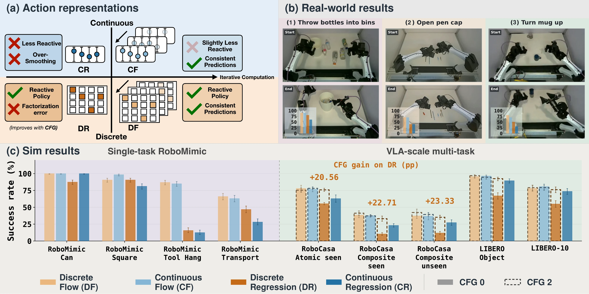

Abstract
Modern AI models like LLMs predict discrete tokens, yet today's robotic foundation models represent actions as continuous vectors. We ask whether continuous action parametrizations are really better than discrete ones. We compare single-step regression and multi-step flow variants of both continuous and discrete policies, in from-scratch single-task training and multi-task VLA training, in simulation and on real hardware.
In every regime, discrete action prediction, even naive uniform-bin quantization, matches or beats continuous-action policies in task success. The challenge for discrete policies is not precision but factorization error: predicting tokens independently across time and action dimensions. With iterative computation through discrete flow, or distribution sharpening through classifier-free guidance, discrete flow policies turn this weakness into a strength and react more to changes within a chunk. Finally, adding explicit geometry, such as corruption processes that mimic continuous flow matching, does not give consistent gains. Robot actions may not need design choices different from other AI domains.
Video
Four action heads, one backbone
Every policy shares the same backbone and data. Only the action head changes: it predicts continuous numbers or discrete tokens, in one pass or over several refinement steps. Hover over a head to see how it works.
- DFDiscrete flowRefines a chunk of action tokens over several steps.
- CFContinuous flowTurns noise into actions over several steps, as in π0.
- DRDiscrete regressionPicks a bin for every token in one pass, each on its own.
- CRContinuous regressionRegresses the action chunk in one pass.
Finding 1Discrete actions match or beat continuous actions
We test the four heads from single-task policies trained from scratch to a PaliGemma VLA in simulation and on a real robot.
- Discrete flow matches continuous flow in every setting.
- Discrete regression beats continuous regression, even when trained from scratch.
- Binning does not cost precision: action errors are about the same for all heads.
Show as a table
Why: discrete heads keep the expert's variation
Both charts compare each head to the demonstrations. A ratio of 1 means the head varies as much as the expert. Continuous heads sit well below 1: they smooth the motion and under-react.
Variation within a chunk
Jerk ratio on 3,000 held-out RoboCasa chunks. Dot: median. Line: middle half.
Following the input
State responsiveness: how much the chunk changes between two nearby RoboCasa states, divided by how much the expert's changes. Median over state pairs.
Finding 2The problem is factorization error, not precision
Discrete regression predicts each token on its own. When a scene allows two behaviors, the tokens can disagree.
- Independent tokens can mix two valid behaviors into an action no demonstration contains.
- Guidance sharpens each token and lifts discrete regression on RoboCasa from 25.8% to 50.2%.
- Discrete flow refines the tokens together and cuts mixed-mode tokens by 5.28×.
Push-T: two ways around the T
The pusher starts on the T's mirror line, so going around either side works.
Discrete regression: probability of each mode, per step
Every step decides on its own.
- Steps before the switch: plausible under mode B
- Steps after the switch: plausible under mode A
- Together: a chunk no demonstrator would make
Factorization error: each token is plausible, the chunk is not.
The same mix-up within one step
Demonstrations go one of two ways, A or B. One token picks x, another picks y. Each is exactly right on its own, yet decoding them independently lands on the mixed cells.
18.6% of actions mix the two modes.
How refinement makes tokens agree
One chip per step in the chunk: its side, A or B.
The rounds are drawn schematically on the Push-T state of paper Figure 5: side A chips sit on a real continuous flow chunk, side B chips on the mode B route.
Fix 1: guidance
RoboCasa success, pooled over three suites.
Fix 2: iterative refinement
Mixed-mode tokens per chunk, on 4,000 validation observations, no guidance.
Finding 3Plain uniform bins are competitive
Flat bins do not tell the model that bin 200 sits next to bin 201. Adding that geometry back helps little.
- A distance-aware corruption path for discrete flow does not beat the uniform one.
- Learned tokenizers (nFSQ, FAST, RVQ) do not beat uniform bins either.
- Autoregressive decoding, over uniform bins or FAST tokens, stays below discrete flow.
- The model learns the geometry itself: neighboring bins get similar embeddings.
Best RoboCasa result by action representation
Pooled success at each row's best setting. Hatched: discrete flow (DF). Solid: autoregressive (AR), one time step after another.
Neighboring bins look alike
Median cosine similarity between bin output embeddings, by distance between bins.
Our findings suggest that the bottleneck is not geometric priors or precision, but factorization error.
BibTeX
@misc{yi2026discrete,
title = {When Do Discrete Actions Make Good Continuous Controllers?},
author = {Yi, Zeji and Dasgupta, Soham and Zhang, Xinyang and Sreenath, Koushil and
Qu, Guannan and Chen, Xi and Simchowitz, Max and Shi, Guanya},
year = {2026},
howpublished = {\url{https://iscoyizj.github.io/discrete-action-website/}}
}